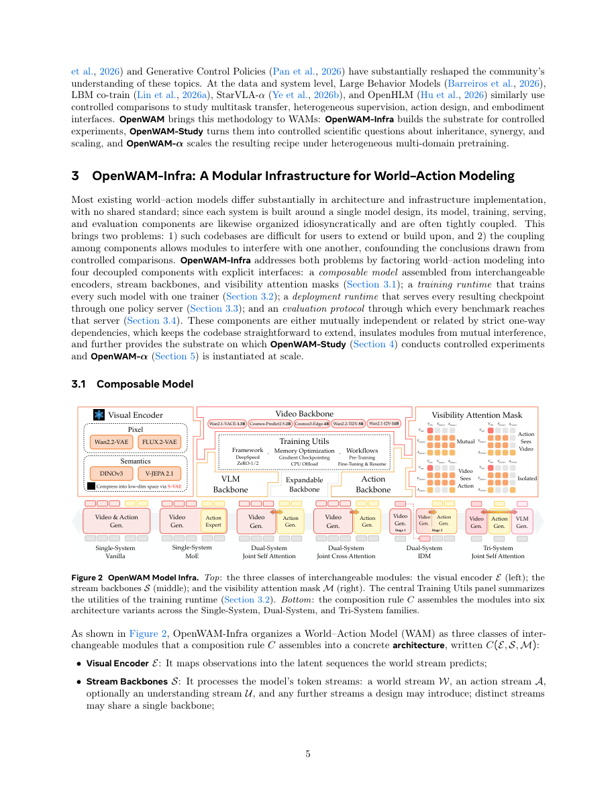

#1
★ 8/10
OpenWAM: An Open, Modular Exploration Towards Systematic World-Action Model Pretraining
OpenWAM: An Open, Modular Exploration Towards Systematic World-Action Model Pretraining

图 Figure · Page 5 of paper
🎯 （AI 中文深度分析暂不可用：Anthropic API 额度不足。英文栏为论文原文摘要，下方链接均可正常访问。）
World-Action Models inherit world knowledge from video-generative priors, and channel it into executable control signals through embodied experience
| 维度 | 中文 | English |
|---|---|---|
| ❓ 待解决 的问题 |
（AI 中文深度分析暂不可用：Anthropic API 额度不足。英文栏为论文原文摘要，下方链接均可正常访问。） | World-Action Models inherit world knowledge from video-generative priors, and channel it into executable control signals through embodied experience. Existing systems, however, are monolithic: the generative backbone, visual representation, architecture, information flow, inference procedure, and training data are tightly coupled, obscuring which design choices matter and why. We introduce OpenWAM, an open research stack that turns world-action pretraining into a controlled experimental program. OpenWAM-Infra factorizes the WAM design space into composable modules with unified training, inference, deployment, and evaluation. On this substrate, OpenWAM-Study examines three questions through controlled experiments: what to inherit, how world and action learning interact, and how their synergy scales; and distills three principles: upstream knowledge transfers through a sufficiently capable generative backbone and a compact, information-rich latent space; world-action synergy requires dedicated action capacity, explicit world-to-action information flow, and synchronized joint denoising; and embodied pretraining principally improves out-of-domain generalization, with one-stage co-training over egocentric and robot data integrating world coverage and action grounding. Composing these principles, we build OpenWAM-α, an open WAM pretrained on roughly 6,400 hours of egocentric human and robot data and evaluated across simulation and real-world benchmarks. Across the eight simulation benchmarks and the real-robot experiments, which together span embodiments from single-arm and bimanual manipulation to dexterous hands, OpenWAM-α delivers consistently excellent performance, sustaining its top-tier standing from simulation to the physical world. We release the full stack, including infrastructure, evaluation protocols, pretrained models, and data recipes, to facilitate future research. |
| 💡 解决 的亮点 |
（AI 中文深度分析暂不可用：Anthropic API 额度不足。英文栏为论文原文摘要，下方链接均可正常访问。） | See the paper’s original abstract in the "Problem / 背景" row above. |
| 🧪 实验 内容 |
（AI 中文深度分析暂不可用：Anthropic API 额度不足。英文栏为论文原文摘要，下方链接均可正常访问。） | See the paper’s original abstract in the "Problem / 背景" row above. |
| 📊 实验 结果 |
（AI 中文深度分析暂不可用：Anthropic API 额度不足。英文栏为论文原文摘要，下方链接均可正常访问。） | See the paper’s original abstract in the "Problem / 背景" row above. |
| 🏁 结论 | （AI 中文深度分析暂不可用：Anthropic API 额度不足。英文栏为论文原文摘要，下方链接均可正常访问。） | See the paper’s original abstract in the "Problem / 背景" row above. |
| 🔗 论文 链接 |
arXiv: 2609.07398v1 · 📥 PDF | |
⚙️ Method · 方法详解
（AI 中文深度分析暂不可用：Anthropic API 额度不足。英文栏为论文原文摘要，下方链接均可正常访问。）
See the paper’s original abstract in the "Problem / 背景" row above.
🌟 Why It Matters · 为什么重要
（AI 中文深度分析暂不可用：Anthropic API 额度不足。英文栏为论文原文摘要，下方链接均可正常访问。）
See the paper’s original abstract in the "Problem / 背景" row above.